The Myth of the dog¶
John Yandell¶
Do you "pat the dog" on your totally modern forehand? You want to don't you? Because that's what Roger does. Just go on YouTube and the "experts" will tell you he does---he points his racket face down to the court and pulls it forward like it was coming off a table top!
Is "patting the dog" like that some kind of modern forehand magic bullet? No. It's the opposite. It's one of the worst things you could possibly focus on.
v
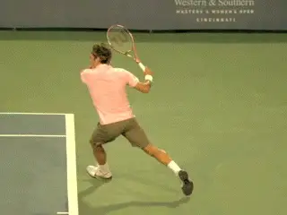
Does Roger Pat the Dog? When? Why?
Does Roger actually put the racket completely flat on the table top? Rarely. Roger closes the racket face but mostly to lesser degrees. And he also closes it at different points in the swing.
Rarely is his racket fully face down---that only happens on really low balls like in the animation above. Does he do it intentionally? No it's a natural consequence of other underlying factors.
Accuracy
So how do these counterproductive teaching concepts get started? When I did the first high speed filming of professional players 20 years ago, the goal was to create a data base to see what the human eye could not see---what really happens in high level technical strokes, and then to use that video evidence to evaluate the accuracy and value of the wildly contradictory teaching information that permeates the tennis world.
And we've accomplished that, filming every year, creating a data base of tens of thousands of clips including dozens of the best players in the history of the game. And for 20 years we have analyzed that growing data base, examining the top players, extracting reality, and applying reality to help players at all levels from elite pro players to college players to club players to beginners.
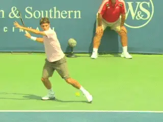
How much does Roger "pat" and when?
The Advanced Tennis section contains most of this pro analysis. (link.) And now I am working through a complete teaching system with progressions for all the strokes based on this work--and how to apply it across levels. (link.) And I am also boiling it all down even further to the minimum number of commonalities in the Ultimate Fundamentals section (link).
Millions of Views
In the last few years the proliferation of filming that has saturated YouTube---much of it illegal---has received literally millions of views and created a way for virtually any teaching pro to expound his or her theories on what the "pros" do. And share it all with the tennis world for free on YouTube! Doesn't that sound great?
I have no problem with multiple voices and approaches to understanding the game. We can all learn from each other and different players definitely respond to different presentations and the perspectives of different coaches.
That was one of my foundational goals in the creation of TPA. To include as many credible voices as possible. Just look at the Famous Coaches section (link). Or look at the Classic Lessons section (link). Dozens and dozens of reality based articles from great, smart coaches.
But that's different from the profusion we see on You Tube. [Most of the new internet experts haven't done the research to back up their claims and don't have much if any experience in coaching or developing players or helping established players correct technical problems.]
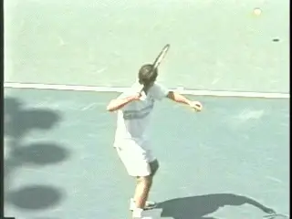
Pete only won 14 Grand Slams with his on edge backswing.
[Instead they look at one or two clips---usually from practice--and generalize, and those theories usually do harm not good. But it's all free! Yes, and there is usually correlation between cost and actual value.]
I have filmed hours and hours of pro practice myself. I can tell you there can be a huge difference between what players do on practice courts versus what they do on match courts. Not always, but you have to know the difference.
And there a second problem, regardless of which court anyone films on. There is a huge variety in what players do technically depending on the given incoming ball and the given shot intention.
This makes it very difficult to generalize about "the" stroke. You have to understand the range of variations. And extract the fundamentals to teach basic technique.
Nowhere is this more true that with the so-called modern forehand. And there is no more counterproductive generalization than the trendy dogma "pat the dog."
Pat What?
"Pat the Dog," in case you are just coming out a coma and getting back to studying tennis after a few years, means that you turn the racket face down parallel to the court surface as if you were "patting a dog." Get it?
So does pat the dog happen? Yes sometimes. Does it always happen with the racket face fully down parallel to the court? Again, no.
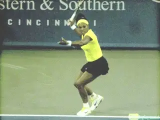
Serena: great forehand, minimal pat.
Are there players with great, great forehands who don't do much if any patting? Yes! And the most important question for you---should you be trying to consciously and mechanically pat the dog? Please god no.
It is possible to build this motion into your forehand automatically and to the right degree, depending on several factors. Definitely. But is it necessary to have a great forehand? No it is not.
Ambiguity
[So how is this article so far for ambiguity and confusion?]
Why so? Because the angle of the racket face in the backswing is not some core or basic requirement. It's a varied consequence of backswing shapes and motions and the shot the player is hitting.
Does patting the dog to any various extent make an incremental contribution to racket speed? Yes.
Are there more important fundamental elements that all great forehands share? Yes. This is why it's crazy to focus on a consequence like "pat the dog" and neglect the underlying foundation of a great forehand.
If patting the dog is really so vital, why do some players with some of the biggest and best forehands in tennis not pat? Pete Sampras, for example. Or Serena Williams, or Maria Sharapova. Or Juan Martin Delpotro.
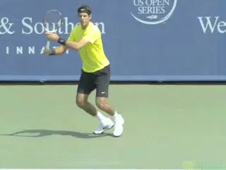
Del Potro: proof you don't need the big pat to rocket the forehand.
Wait, Pete is retired and he is old school. He only won 14 Slams. A real forehand needs to be totally "modern."
And Serena and Maria? They have "old" style backswings that tend to go back behind the plane of the body. They couldn't models. Unless you don't care if someone compares your backswing to Serena when you rocket a 75 mph forehand winner past them.
But how about an elite male player like Juan Martin Delpotro? He has one of the biggest forehands in the game. Yet there is minimal to no dog patting there.
His racket comes down in the backswing almost perfectly on edge like Sampras. But maybe his forehand is an anomaly. Maybe his forehand is flawed and should be even bigger-- if only he was doing some real patting. Sure.
But Roger
So then how about Roger? That's the forehand everyone wants and everyone models or tries to model or thinks they are modeling. Does he Pat the Dog? Again there is no one dog pat.
Does he put it fully flat on the table top? On only a few forehands. Looking through dozens and dozens of clips I found only a handful of pats that could rightfully be described as on the table top.
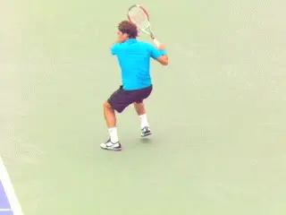
Roger varies how much the face closes in part depending on ball height.
[But Roger definitely pats the dog to some degree on most balls. The reality is he does it to different degrees at different times.]
At maximum pat on any given ball, the racket can be closed at a wide range of angles. Typically there is more pat when the ball is lower and less when the ball is higher.
And another important complexity: the tip of the racket at maximum pat can point in radically different directions. Straight back. Or directly at the sideline.Or in between.
So Roger is a genius? No one could dispute that. But are all these variations conscious decisions? That would be completely impossible even for Roger. The differences occur literally in milliseconds --- less time than it takes for the brain to send a message to the muscles.
Now after learning all this do you think you yourself can intentionally pat the dog at 5 or 10 different points in the swing --- with the racket tip pointing at greatly different angles? You know there are people out there trying.
Why?
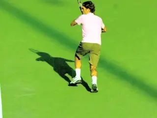
Look at the differences in where the racket tip can point at maximum pat.
[The underlying question really is why any pat occurs at all. The answer has to do with the nature of backswings and how the arm rotates in the shoulder joint and what that means in the stroke and how it contributes to racket speed.]
How does it all work? Roger hits a straight arm forehand on almost all of his forehands. When Roger straightens out his arm as the backswing descends, look at his forearm. [At the start of the descent, the top of the forearm basically points to the sky and the underside to the court.]
From this position[, his entire arm and the racket then rotate backwards or clockwise as a unit from the shoulder joint. Technically that backward rotation is called external shoulder rotation.]
This backward rotation is then immediately followed by the forward or counter clockwise rotation of the arm and racket in the forward swing. Technically that is called internal shoulder rotation. The two rotations are continuous and flow one into the other.
Guess what? [The first rotation, backwards or the external rotation, pre stretches the muscles and, to use another trendy term, creates a stretch shorten cycle.]
This in turn increases the force the muscles can generate in the second rotation, the forward internal rotation in the forward swing. This adds what Brian Gordon has called a turbo charge effect. The combination of these rotations, according to Brian, work together to generate extra racket speed the same way they do on the serve. (If you really want to understand this technically, read Brian's brilliant articles in the Biomechanics section. link.)
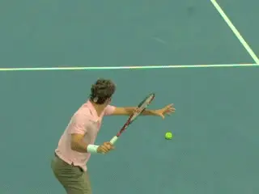
After his arm straightens it rotates backward---then forward toward the contact.
This is all a natural function of Roger's backswing movements. And the amount depends on the timing and intention of the forward swing. It's something players feel and do naturally but undoubtedly have no idea they are doing or how.
I found this out for myself when I made my first stroke instructional video in the 1990s. My goal was to create an absolute minimalist model to teach a really effective, efficient forehand to club players.
My model had the racket on edge at the end of the backswing, staying on edge in the foreswing, and finishing on edge at the extension position checkpoints.
Guess what the video showed? Without even realizing it, I was closing the face slightly at the start of the forward swing on many balls --- even though I was trying to stay perfectly on edge.
There was a natural, partial dog pat. Why? [Because players feel what tends to make the racket go faster and they tend to do those things unconsciously.]
You can see the same thing---a slightly closed racket face---in the forehands of Delpo and Serena. But that's not the same as an intentional on the table top full dog pat.
Automatic Pat
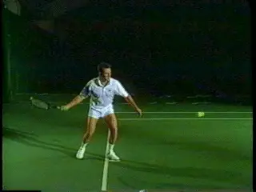
It turns out that even an edge to edge forehand can have some pat.
[So is there a way to automatically create the right amount of dog pat in your forehand without having to think about it? Yes. This is the genius of the ATP forehand model created by Brian Gordon.]
The key is the outside backswing position he devised, popularized by Rick Macci, when those two began working together several years ago. This backswing position is what Rick calls "tap the dog." The racket goes back and up and slightly to the outside with the face slightly closed, say at about 30 degrees to the court surface at most. (link.)
From there Rick tells players to straighten out the arm and then just pull the racket forward and hit the ball! The right amount of pat will happen naturally.
This "tap the dog" is the position Federer achieves on his own backswing. Then when Roger moves to his straight arm hitting position, the face naturally starts to close. And this leads unconsciously and automatically to the perfect and appropriate amount of dog pat on every ball.
Double Bend Dog Pat
But it's not just Roger. You can see the same effect with players with a double bend hitting arm structure. Novak Djokovic for example also pats the dog naturally as a consequence of his own, different backswing.
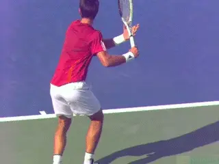
Novak gets to his own version of pat the dog with a different arm configuration and backswing.
Novak sets up the external or backward arm rotation differently, by pointing the racket tip almost directly forward toward the opponent early in the backswing. (To understand the differences in the two basic hitting arm positions, link for the double bend. link for the straight arm.)
Novak's backswing isn't as compact as Federer's, but when he rotates the arm backward from this backswing position, he pats the dog to a similar degree. And again this varies automatically depending on the incoming and outgoing ball.
What Does This Mean?
So what is the real point here for you? Regardless of your backswing, the key to patting the dog is to forget you even have heard that term. Never mention it again, especially in an online message board post.
The issue is exactly the same as my last article on the "Myth of Lag and Snap." (link.) Players think they see what the pros do, then torture themselves trying to manipulate what should be automatic, consequential movements.
So many players don't realize that if they set up and coil correctly and swing forward correctly all that craziness will or will not happen on its own at the right time as a result of having simple, underlying fundamentals. Just check out Scott Murphy's two articles on forehand preparation (link) and on forehand completion (link).
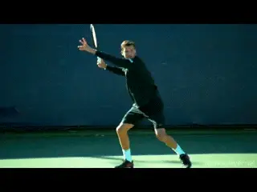
Commonalities that transcend patting the dog: coiling and extension. And yet the dog pat happens.
Finally, look at the gorgeous, perfect technical straight arm forehand of Grigor Dimitrov. A "tap the dog" racket position at the completion of the full turn. A full dog pat. And perfect extension.
Like I said at the end of my article of the myth of lag and snap, learn the checkpoints for the full turn. Shoulders and hips fully and appropriately rotated. Left arm stretched. Semi open stance with the outside leg coiled, ready to go to neutral depending on the ball.
[Now visualize the extension point. Wrist at eye level. Racket hand across the body even with the edge of the left side of the torso. Great spacing between the racket hand and the body.]
Swing to the image of that position. You won't even know if you pat the dog, or how much. And it won't matter. But you will if you need to.
Simple, powerful, magical. Two keys to create the physical, mental, emotional, and aesthetic pleasure of a great technical swing and a weaponized forehand.
Or just stick to YouTube. Or really what I advise, delete all the clips from experts there you may have saved. The holy grail exists but only if you have access to the true knowledge.

John Yandell is widely acknowledged as one of the leading videographers and students of the modern game of professional tennis. His high speed filming for Advanced Tennis and TPA have provided new visual resources that have changed the way the game is studied and understood by both players and coaches. He has done personal video analysis for hundreds of high level competitive players, including Justine Henin-Hardenne, Taylor Dent and John McEnroe, among others.
In addition to his role as Editor of TPA he is the author of the critically acclaimed book Visual Tennis. The John Yandell Tennis School is located in San Francisco, California.